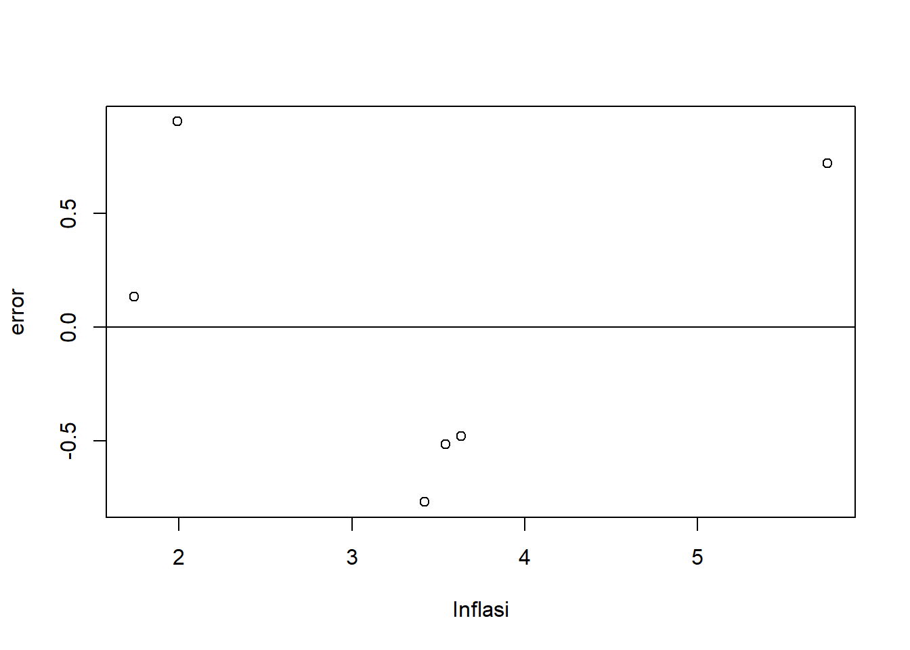
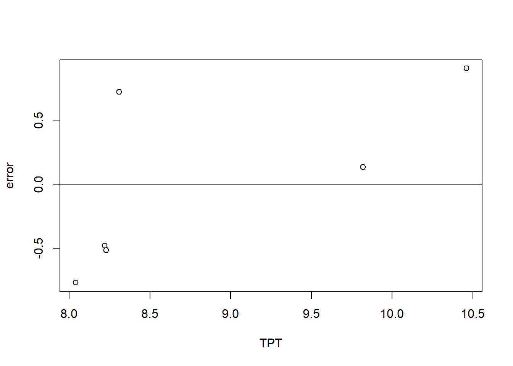
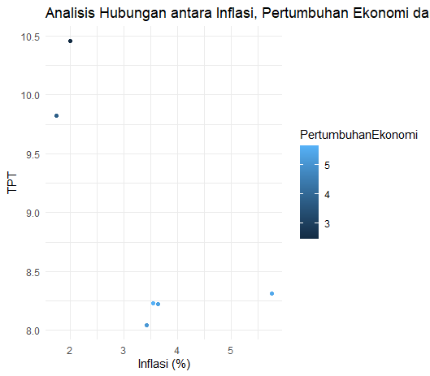
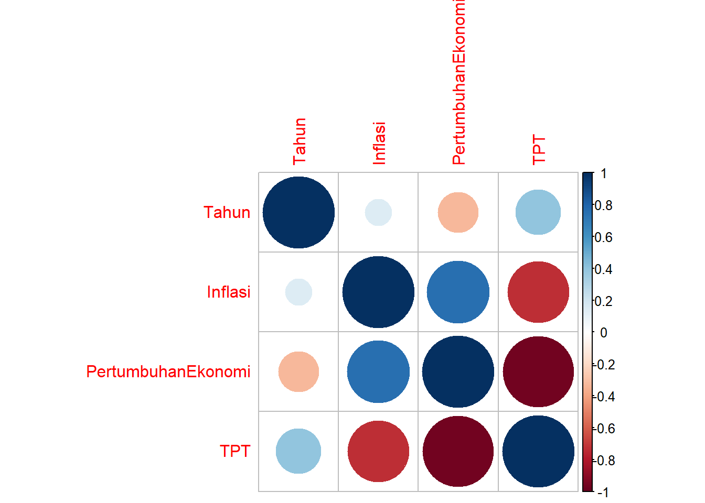
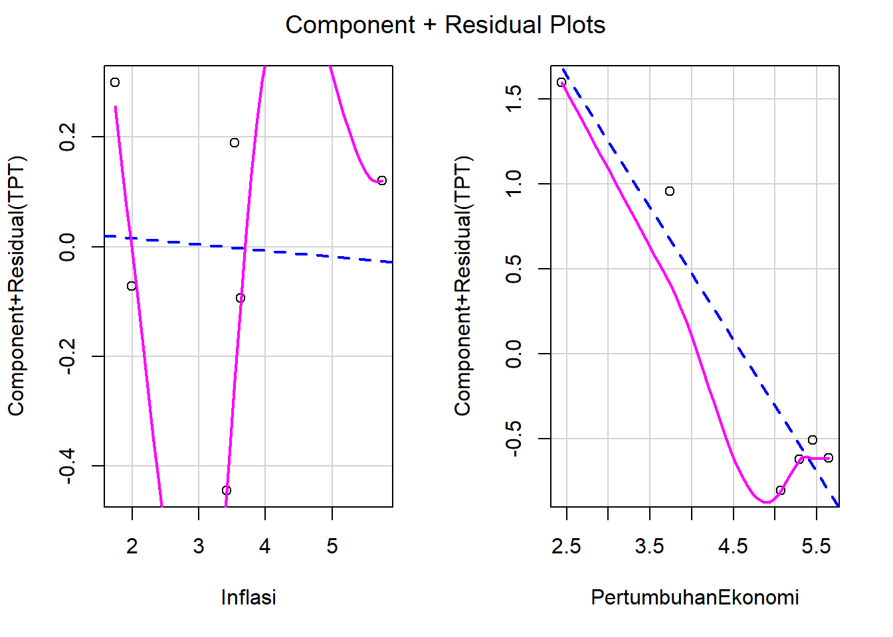

library('tidyverse')
library('corrplot')
library('car')
library('readxl')
library('dplyr')
library('broom')
library('ggplot2')Pengaruh Inflasi dan Pertumbuhan Ekonomi Terhadap Tingkat Pengangguran Terbuka (TPT) di Jawa Barat

1 Pendahuluan
1.1 Latar Belakang
Tingkat Pengangguran Terbuka atau yang sering disebut dengan TPT merupakan persentase dari jumlah pengangguran terhadap jumlah angkatan kerja. Menurut Mantra (2009) pengangguran adalah bagian dari angkatan kerja yang sekarang ini tidak bekerja dan sedang aktif mencari pekerjaan. Konsep ini sering diartikan sebagai keadaan pengangguran terbuka. Pengangguran terbuka adalah persentase penduduk yang mencari pekerjaan, yang mempersiapkan usaha, yang tidak mencari pekerjaan karena merasa tidak mungkin mendapatkan pekerjaan, yang sudah mempunyai pekerjaan tetapi belum mulai bekerja dari sejumlah angkatan kerja yang ada (Sukirno, 2000).
Salah satu faktor penyebab ada nya pengangguran terbuka yaitu inflasi dan pertumbuhan ekonomi. Inflasi yang tinggi akan menekan angka pengangguran yang semakin tinggi. Lalu untuk pertumbuhan ekonomi sendiri jika ia mengalami penurunan maka angka TPT akan mengalami kenaikan, begitu pula sebaliknya.
1.2 Ruang Lingkup
Pada penelitian ini, penulis mengambil ruang lingkup yang sesuai dengan variabel yang dijelaskan. Penulis menggunakan 3 variabel, yaitu Inflasi dan Pertumbuhan Ekonomi Terhadap Tingkat Pengangguran Terbuka (TPT) di Jawa Barat. Data yang digunakan bersifat time series dalam kurun waktu 2017-2022.
1.3 Rumusan Masalah
- Apakah inflasi dan pertumbuhan ekonomi berpengaruh signifikan terhadap TPT di Jawa Barat?
- Apakah terdapat hubungan signifikan antara inflasi dan TPT di Jawa Barat?
- Apakah pertumbuhan ekonomi berkontribusi terhadap penurunan TPT di Jawa Barat?
- Bagaimana dampak jangka panjang dan jangka pendek dari inflasi dan pertumbuhan ekonomi terhadap TPT di Jawa Barat?
1.4 Tujuan dan Manfaat Penelitian
Penelitian ini bertujuan untuk mengetahui pengaruh dari inflasi dan pertumbuhan ekonomi terhadap Tingkat Pengangguran Terbuka (TPT) di Jawa Barat pada tahun terkait (2017-2022).
Manfaat penelitian ini agar masyarakat paham akan adanya pengaruh dari inflasi dan pertumbuhan ekonomi terhadap Tingkat Pengangguran Terbuka (TPT) di Jawa Barat pada tahun terkait (2017-2022).
1.5 Package
2 Studi Pustaka
1. Inflasi
Inflasi didefinisikan dengan banyak ragam yang berbeda, tetapi semua definisi itu mencakup pokok-pokok yang sama. Samuelson (2001) memberikan definisi bahwa inflasi sebagai suatu keadaan dimana terjadi kenaikan tingkat harga umum, baik barang-barang, jasa-jasa maupun faktor-faktor produksi. Adapula pengertian inflasi menurut Gilarso (2013:200) adalah kenaikan harga umum, yang bersumber pada terganggunya keseimbangan antara arus uang dan arus barang.
2. Pertumbuhan Ekonomi
Pertumbuhan ekonomi adalah sebuah proses dari perubahan kondisi perekonomian yang terjadi di suatu negara secara berkesinambungan untuk menuju keadaan yang dinilai lebih baik selama jangka waktu tertentu. Pertumbuhan ekonomi merupakan upaya peningkatan kapasitas produksi untuk mencapai penambahan output, yang diukur menggunakan Produk Domestik Bruto (PDB) maupun menggunakan Produk Domestik Regional Bruto (PDRB) dalam suatu wilayah. (Rahardjo, 2013). Simon Kuznets (dalam Arsyad, 2010) menyatakan bahwa pertumbuhan ekonomi merupakan kenaikan kapasitas jangka panjang dari negara yang bersangkutan untuk menyediakan berbagai barang ekonomi kepada penduduknya. Kenaikan kapasitas tersebut dimungkinkan oleh adanya kemajuan atau penyesuaian-penyesuaian teknologi, institusional dan ideologi terhadap berbagai keadaan yang ada.
3 Metode Penelitian
3.1 Data
Data dibawah ini merupakan data Inflasi, Pertumbuhan Ekonomi, dan TPT di Provinsi Jawa Barat (dalam bentuk persen).
| Tahun | Inflasi | Pertumbuhan Ekonomi | TPT |
|---|---|---|---|
| 2017 | 3,63 | 5,29 | 8,22 |
| 2018 | 3,54 | 5,64 | 8,23 |
| 2019 | 3,42 | 5,07 | 8,04 |
| 2020 | 1,99 | 2,44 | 10,46 |
| 2021 | 1,74 | 3,74 | 9,82 |
| 2022 | 5,75 | 5,45 | 8,31 |
Penelitian ini menggunakan data sekunder dengan bentuk time series (2017-2022). Data yang digunakan yaitu data yang telah diolah dari Badan Pusat Statistik Jawa Barat.
Baca data
# import dataset
library(readxl)
dat<-read_excel("C:/UAS METOPEL/BOOK5.xlsx")
summary(dat) Tahun Inflasi PertumbuhanEkonomi TPT
Min. :2017 Min. :1.740 Min. :2.440 Min. : 8.040
1st Qu.:2018 1st Qu.:2.348 1st Qu.:4.072 1st Qu.: 8.223
Median :2020 Median :3.480 Median :5.180 Median : 8.270
Mean :2020 Mean :3.345 Mean :4.605 Mean : 8.847
3rd Qu.:2021 3rd Qu.:3.607 3rd Qu.:5.410 3rd Qu.: 9.443
Max. :2022 Max. :5.750 Max. :5.640 Max. :10.460 str(dat)tibble [6 × 4] (S3: tbl_df/tbl/data.frame)
$ Tahun : num [1:6] 2017 2018 2019 2020 2021 ...
$ Inflasi : num [1:6] 3.63 3.54 3.42 1.99 1.74 5.75
$ PertumbuhanEkonomi: num [1:6] 5.29 5.64 5.07 2.44 3.74 5.45
$ TPT : num [1:6] 8.22 8.23 8.04 10.46 9.82 ...Plot pengaruh error terhadap Inflasi
dat<-read_excel("C:/PLOT ERROR INFLASI/BOOK1.xlsx")
reg1<-lm(y~x,data=dat)
dat$u<-resid(reg1)
plot(dat$x,dat$u,xlab="Inflasi",ylab="error")
abline(h=0)
Plot pengaruh error terhadap TPT
dat<-read_excel("C:/PLOT ERROR INFLASI/BOOK1.xlsx")
reg1<-lm(y~x,data=dat)
dat$u<-resid(reg1)
plot(dat$y,dat$u,xlab="TPT",ylab="error")
abline(h=0)
Plot Hubungan Antara Inflasi, Pertumbuhan Ekonomi dan TPT

3.2 Metode Analisis
Metode analisis yang dipilih adalah Regresi Multivariat dengan 2 variabel independen. Penelitian ini bertujuan untuk mengetahui pengaruh dari inflasi (X1) dan pertumbuhan ekonomi (X2) terhadap Tingkat Pengangguran Terbuka (Y) di Jawa Barat pada tahun terkait (2017-2022). Spesifikasinya adalah:
\[ Y=\beta_0 + \beta_1 X_1+\ \beta_2 X_2+\ \mu_t \] Di mana \(Y\) adalah TPT Jawa Barat, \(X1\) adalah inflasi Jawa Barat, dan \(X2\) adalah pertumbuhan ekonomi Jawa Barat.
4 Pembahasan
4.1 Pembahasan Masalah
| Variable | Coefficient | Std.Error | t-value | Prob (.) |
|---|---|---|---|---|
| Intercept | 12.46913 | 0.58539 | 21.300 | 0.000226 |
| Inflasi | -0.01116 | 0.16125 | -0.069 | 0.949199 |
| Pertumbuhan Ekonomi | -0.77853 | 0.18424 | -4.226 | 0.024239 |
| R Squared | 0.9333 | |||
| Adjusted R-Squared | 0.8889 | |||
| F-Statistic | 21 | |||
| Prob(F-Statistic) | 0.01721 |
Hasil regresi yang didapatkan kemudian dimasukkan ke dalam rumus persamaan
\[ Y=12.469 + (-0.011 X1) + (-0.778 X2) \]
Inflasi berperan dalam penurunan TPT dikarenakan variabel X1 yang negatif. Begitu pula dengan Pertumbuhan Ekonomi yang berperan dalam penurunan TPT. Jika diasumsikan inflasi naik 1 satuan, maka TPT di Jawa Barat akan mengalami penurunan sebesar 0.011. Kemudian jika pertumbuhan ekonomi diasumsikan naik 1 satuan, maka TPT di Jawa Barat akan mengalami penurunan sebesar 0.778.
4.2 Analisis Masalah
Hasil regresinya adalah
library(readxl)
dat<-read_excel("C:/UAS METOPEL/BOOK5.xlsx")
reg1<-lm(TPT~Inflasi+PertumbuhanEkonomi,data=dat)
summary(reg1)
Call:
lm(formula = TPT ~ Inflasi + PertumbuhanEkonomi, data = dat)
Residuals:
1 2 3 4 5 6
-0.09019 0.19129 -0.44381 -0.08731 0.28200 0.14802
Coefficients:
Estimate Std. Error t value Pr(>|t|)
(Intercept) 12.46913 0.58539 21.300 0.000226 ***
Inflasi -0.01116 0.16125 -0.069 0.949199
PertumbuhanEkonomi -0.77853 0.18424 -4.226 0.024239 *
---
Signif. codes: 0 '***' 0.001 '**' 0.01 '*' 0.05 '.' 0.1 ' ' 1
Residual standard error: 0.3419 on 3 degrees of freedom
Multiple R-squared: 0.9333, Adjusted R-squared: 0.8889
F-statistic: 21 on 2 and 3 DF, p-value: 0.01721# Membuat plot matriks korelasi
dat<-read_excel("C:/UAS METOPEL/BOOK5.xlsx")
corrplot(cor(dat))
#Membuat plot sisa parsial
library('car')
dat<-read_excel("C:/UAS METOPEL/BOOK5.xlsx")
model <- lm(TPT ~ Inflasi + PertumbuhanEkonomi, data = dat)
crPlots(model)
5 Kesimpulan
5.1 Kesimpulan Regresi
Dari hasil regresi multivariat di atas, maka dapat disimpulkan antara lain:
- a sebesar 12.46913 merupakan konstanta atau keadaan saat variabel TPT belum dipengaruhi oleh variabel lainnya, yaitu variabel inflasi (X1) dan pertumbuhan ekonomi (X2). Jika variabel independen tidak ada, maka variabel TPT di Jawa Barat tidak akan mengalami perubahan.
- Nilai koefisien regresi inflasi (X1) bernilai negatif sebesar -0.011 dapat diasumsikan bahwa jika variabel inflasi meningkat 1 satuan, maka TPT di Jawa Barat akan menurun sebesar 0.011.
- Nilai koefisien regresi pertumbuhan ekonomi (X2) bernilai negatif sebesar -0.788 dapat diasumsikan bahwa jika variabel pertumbuhan ekonomi meningkat 1 satuan, maka TPT di Jawa Barat akan menurun sebesar 0.778.
5.2 Uji Hipotesis
Dari hasil regresi multivariat di atas, maka dapat disimpulkan uji hipotesis yang diperoleh antara lain:
- Nilai sig variabel inflasi (X1) sebesar 0.94 (>0.05), maka dapat disimpulkan bahwa variabel inflasi (X1) tidak berpengaruh signifikan terhadap variabel TPT di Jawa Barat (Y).
- Nilai sig variabel pertumbuhan ekonomi (X2) sebesar 0.02 (<0.05), maka dapat disimpulkan bahwa variabel pertumbuhan ekonomi (X2) berpengaruh signifikan terhadap variabel TPT di Jawa Barat (Y).
5.3 Koefisien Determinasi
Berdasarkan hasil regresi yang didapatkan, diketahui bahwa nilai koefisien determinasi sebesar 93.33% yang artinya inflasi dan pertumbuhan ekonomi Jawa Barat memberikan kontribusi sebesar 93.33% terhadap TPT di Jawa Barat. Sedangkan sisanya sebesar 6.67% disebabkan oleh faktor lain yang tidak diteliti oleh penulis.
5.4 Kesimpulan Akhir
Berdasarkan rumusan masalah yang sudah diberitahukan. Maka dapat disimpulkan sebagai berikut:
- Untuk inflasi sendiri tidak berpengaruh signifikan terhadap TPT di Jawa Barat karena memiliki nilai signifikansi 0.94 (>0.05). Sedangkan pertumbuhan ekonomi berpengaruh signifikan terhadap TPT di Jawa Barat karena memiliki nilai signifikansi 0.02 (<0.05).
- Inflasi tidak berpengaruh signifikan terhadap TPT di Jawa Barat.
- Pertumbuhan ekonomi berkontribusi terhadap penurunan TPT di Jawa Barat sebesar 0.778.
- Dampak jangka pendek dan jangka panjang untuk inflasi dan pertumbuhan ekonomi sudah pasti akan mempengaruhi TPT yang di mana ketika inflasi naik, maka angka TPT di Jawa Barat akan semakin meningkat karena perusahaan akan mengurangi output dan mengambil kebijakan dengan mengurangi tenaga kerja. Sehingga, akan ada PHK. Terutama jika hiperinflasi pasti akan terjadi PHK massal. Kemudian untuk pertumbuhan ekonomi, ketika naik maka angka TPT di Jawa Barat akan mengalami penurunan. Karena pertumbuhan ekonomi yang naik menandakan kesejahteraan masyarakat di daerah tersebut. Semakin tinggi pertumbuhan ekonomi, maka kesejahteraan masyarakat akan semakin baik sehingga angka TPT akan menurun.
6 Referensi
Marini, L., & Putri, N. T. (2020). Peluang Terjadinya Pengangguran Di Provinsi Bengkulu : Seberapa Besar?. Convergence: The Journal of Economic Development, 1(2), 70–83. https://doi.org/10.33369/convergence-jep.v1i2.10900.
Suparmono, & Puteri, N. A. (2018). Analisis Pengangguran Terbuka Di Provinsi Jawa Timur Tahun 2013-2016. Yogyakarta: Universitas Islam Indonesia, 20–55.
Milasari, A. S. (2020). Pengaruh Perubahan Nilai Tukar Terhadap Harga Barang Impor Dan Inflasi Dalam Negeri Di Beberapa Negara Industri. Jurnal Ekonomi, 14–35.
Sulistiawati, R. (2012). Pengaruh Investasi terhadap Pertumbuhan Ekonomi dan Penyerapan Tenaga Kerja Serta Kesejahteraan Masyarakat di Provinsi di Indonesia. Jurnal Ekonomi Bisnis Dan Kewirausahaan, 3(1), 29–50. DOI :10.26418/jebik.v3i1.9888.
Badan Pusat Statistik. Tingkat Pengangguran Terbuka Kabupaten/Kota (Persen), 2017-2022. Badan Pusat Statistik Provinsi Jawa Barat, accessed: 02-01-2024.
Bintang, Y. S., & Prana, R. R. (2020). Pengaruh Inflasi terhadap Tingkat Pengangguran Terbuka di Kota Medan Sri. Jurnal Studi Manajemen, 5–24.
.